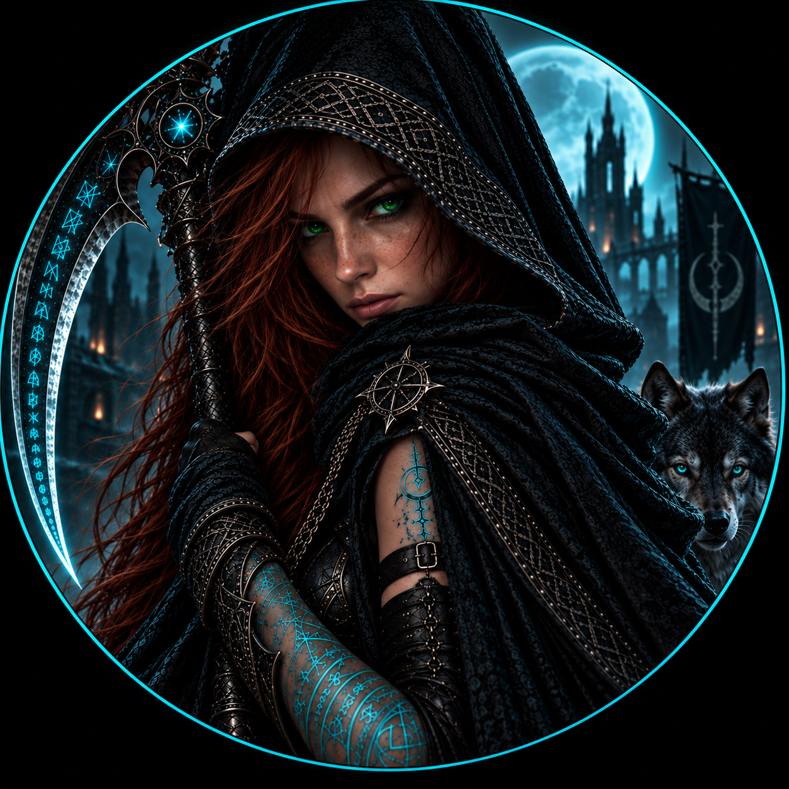
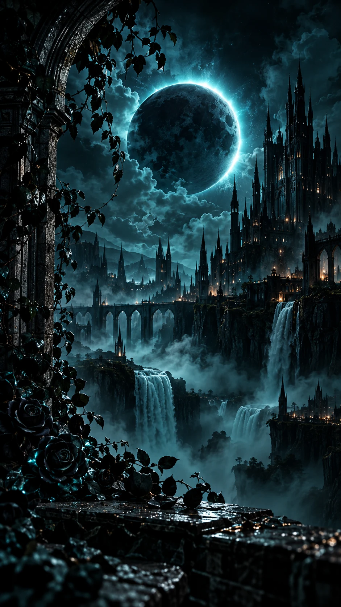
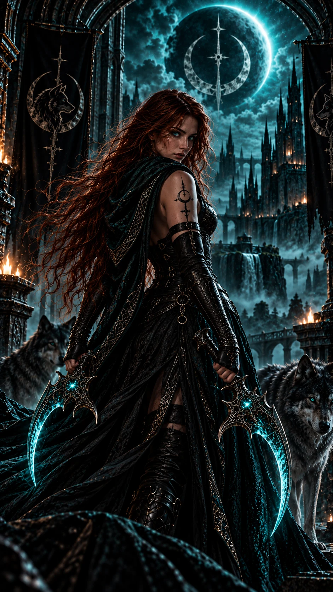

Voice & Narration
A warm, resonant voice exploring fantasy, suspense, character, and the feeling beneath the words. A growing collection of practice recordings and narration samples.
Explore the voiceover portfolio →Voice · Film · Dark Fantasy
Stories spoken, imagined,
and brought to life.
A creative home for my narration practice, AI-generated films and imagery, and the dark-fantasy worlds taking shape behind the scenes.

The creative work
Listen to a performance, follow a visual story, or step into a world still being written.
A warm, resonant voice exploring fantasy, suspense, character, and the feeling beneath the words. A growing collection of practice recordings and narration samples.
Explore the voiceover portfolio →AI-generated imagery and visual experiments inspired by my characters and story worlds.
Watch the featured film →Original fiction, character development, and worldbuilding, with Alexandra Takar at the heart of a dark-fantasy project in progress.
Enter the story world →AI Films & Visuals
My original characters and imagined worlds, visualized with AI.
Featured visual · 00:08
A glimpse of Alexandra’s world: black stone, candlelight, and the character at the heart of the story. Created with Google Flow.
More AI-generated films, imagery, and visual experiments will appear here as they develop.
Original Dark Fantasy
A half-fae death mage. A world taking shape in moonlight and shadow.
Alexandra began as a character with a story of her own. She has also become the creative identity behind my voice, visual storytelling, and original fiction.
“Death is only the beginning.”
Selected excerpts, character lore, and glimpses of her world will live here as the story develops.
Inside the world
Moonlit citadels. Glowing runes. A scythe, a wolf, and the woman whose story is still being written.
See Alexandra in motion ↑

Get in touch
Voiceover inquiries, creative collaborations, and conversations about the work.
Stories, characters, and worldbuilding by me. Images generated with AI; film created with Google Flow.